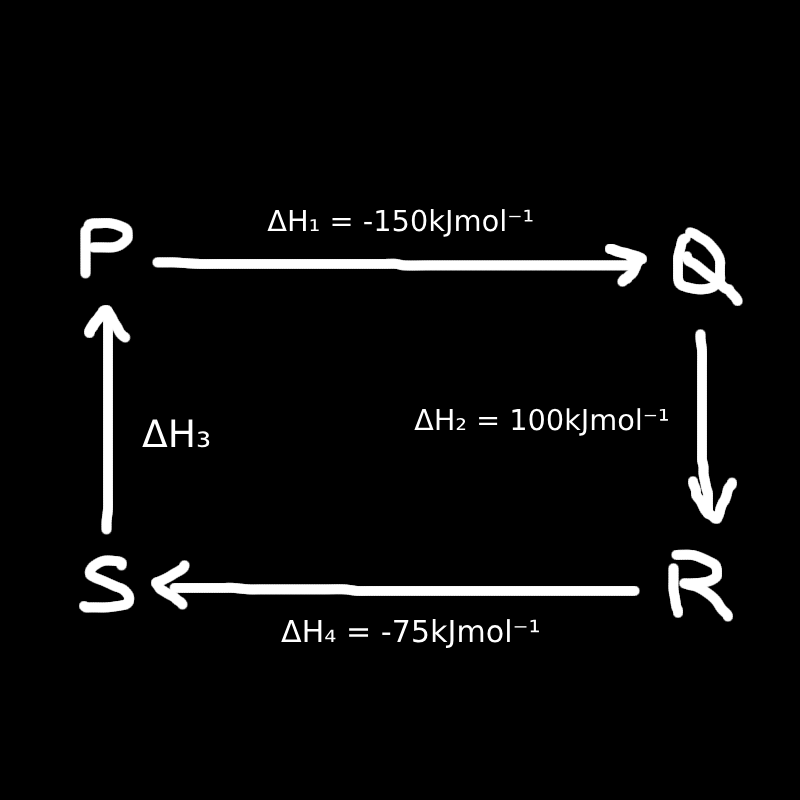

Questions (with solutions!)
NOTE: The solutions are wrote by ChatGPT.
I am aware of the solutions may be bad/confusing (I tried to edit the ones that may be confusing). If you are still confused on any question, feel free to ask someone that's good at the topic (or ask ChatGPT for more clarification lol) or you can just skip the question for now, and come back later.
This also means that the solution MAY be wrong (or I wrote the questions wrong for ChatGPT).
1. At STP, 10 dm³ of carbon monoxide (CO) burns in air completely and releases 126.45 kJ of heat. What is the heat of combustion of CO at STP in kJ mol\(^{-1}\)?
A. 251.4 kJ
B. 251.4 kJ mol\(^{-1}\)
C. 283.2 kJ
D. 283.2 kJ mol\(^{-1}\)
Solution:
We want the heat released per mole of CO. At STP, 1 mole of any gas occupies 22.4 dm³.
You have 10 dm³ of CO, so:
\[ \text{Moles of CO} = \frac{10}{22.4} \approx 0.4464 \] This amount of CO gives off 126.45 kJ. To find heat per mole:
\[ \text{Heat per mole} = \frac{126.45}{0.4464} \approx 283.2\,\text{kJ/mol} \] So the heat of combustion is 283.2 kJ mol\(^{-1}\).
Answer: D. 283.2 kJ mol\(^{-1}\)
2. Given the following thermochemical equations:
I. \( 4\text{Fe}(s) + 3\text{O}_2(g) \rightarrow 2\text{Fe}_2\text{O}_3(s) \quad \Delta H = -1672\,\text{kJ} \)
II. \( \text{C}(s) + \text{O}_2(g) \rightarrow \text{CO}_2(g) \quad \Delta H = -418\,\text{kJ} \)
What is the value of \( \Delta H \) for this equation?
\( 2\text{Fe}_2\text{O}_3(s) + 3\text{C}(s) \rightarrow 4\text{Fe}(s) + 3\text{CO}_2(g) \)
A. –209
B. 209
C. 418
D. 1254
Solution:
We use Hess's Law — combine the first two equations to match the third.
Reverse the second equation to get Fe₂O₃ decomposition:
\[ 2\text{Fe}_2\text{O}_3(s) \rightarrow 4\text{Fe}(s) + 3\text{O}_2(g) \quad \Delta H = +1672\, \text{kJ} \]
Multiply the first equation by 3 (for 3 CO₂):
\[ 3\text{C}(s) + 3\text{O}_2(g) \rightarrow 3\text{CO}_2(g) \quad \Delta H = 3 \times (-418) = -1254\, \text{kJ} \]
Add both equations:
\[ 2\text{Fe}_2\text{O}_3(s) + 3\text{C}(s) \rightarrow 4\text{Fe}(s) + 3\text{CO}_2(g) \] \[ \Delta H = +1672 - 1254 = +418\, \text{kJ} \] Answer: C. 418
3. K(s) + \(\frac{1}{2}\text{Br}_2(l)\) → KBr(s) ΔH = –94.0 kcal
Which of the following statements are correct?
I. The above reaction is endothermic
II. The molar heat of formation of KBr(s) is –94.0 kcal/mol
III. The enthalpy of the product KBr(s) is higher than that of the reactants
IV. If the reaction takes place in an insulated container, the temperature will increase
V. The reaction can be written as K(s) + \(\frac{1}{2}\text{Br}_2(l)\) → KBr(s) + 94 kcal
A. I, II, V
B. I, III, V
C. I, IV, V
D. II, IV, V
Solution:
I. ❌ False — ΔH is negative, so the reaction is exothermic, not endothermic.
II. ✅ True — The reaction forms 1 mole of KBr(s) from elements in standard state. That's the definition of standard molar enthalpy of formation.
III. ❌ False — Exothermic reactions produce products with lower energy than reactants.
IV. ✅ True — In an insulated container, released heat raises the temperature of the surroundings.
V. ✅ True — Putting heat on the product side indicates it's exothermic, same as negative ΔH.
Answer: D. II, IV, V
4. 121 kJ of heat is released when 1 g of hydrogen burns in air to form steam. Which thermochemical equation is correct?
A. 2H₂(g) + O₂(g) → 2H₂O(g) + 484 kJ
B. 2H₂(g) + O₂(g) → 2H₂O(g) + 242 kJ
C. 2H₂(g) + O₂(g) → 2H₂O(g) – 242 kJ
D. 2H₂(g) + O₂(g) → 2H₂O(g) + 121 kJ
Solution:
Heat released = 121 kJ per 1 g of H₂.
Molar mass of H₂ = 2 g/mol → 1 g = 0.5 mol.
So, 1 mol H₂ releases \( \frac{121}{0.5} = 242 \) kJ.
Therefore, 2 mol H₂ releases \( 2 \times 242 = 484 \) kJ.
Now, check the equations:
A. 2H₂ + O₂ → 2H₂O(g) + 484 kJ ← ✅ Correct (matches calculation)
B. 2H₂ + O₂ → 2H₂O(g) + 242 kJ ← ❌ too low
C. 2H₂ + O₂ → 2H₂O(g) – 242 kJ ← ❌ wrong sign format
D. 2H₂ + O₂ → 2H₂O(g) + 121 kJ ← ❌ much too low
Answer: A. 2H₂(g) + O₂(g) → 2H₂O(g) + 484 kJ
5. Table below shows the results of an experiment where 2 mol L−1 HCl reacts with 2 mol L−1 NaOH solution:
| Experiment | Volume of HCl (2 M) | Volume of NaOH (2 M) | Temperature Increase |
|---|---|---|---|
| 1 | 50 mL | 50 mL | \( t_1 \) |
| 2 | 100 mL | 100 mL | \( t_2 \) |
Which of the following is correct?
A. \( t_1 = t_2 \)
B. \( t_1 = 2t_2 \)
C. \( 2t_1 = t_2 \)
D. \( 4t_1 = t_2 \)
Solution:
The reaction is exothermic. The temperature rise is proportional to heat released per unit total volume. Both experiments use same concentration of HCl and NaOH, so heat released is proportional to moles reacting (which doubles in experiment 2).
However, volume of solution also doubles, so heat is spread out over more water.
Heat released ∝ number of moles = doubled
But total volume (and thus heat capacity) also doubled, so temperature rise stays the same
Answer: A. \( t_1 = t_2 \)
6. Figure below illustrates the enthalpy changes of a series of reactions.

Which of the following statements is correct?
I. \( \Delta H_1 + \Delta H_2 = \Delta H_3 + \Delta H_4 \)
II. The enthalpy change for the reaction P → S is –125 kJ mol⁻¹
III. The enthalpy change for the reaction S → Q is 175 kJ mol⁻¹
Solution:
Since P → Q → R and P → S → R is the same, naturally \( \Delta H_1 + \Delta H_2 = \Delta H_3 + \Delta H_4 \).
✅ I is correct
Check II:
We just calculated \( \Delta H_3 = \text{P} \to \text{S} = -125\, \text{kJ/mol} \)
✅ II is correct
Check III:
We find S → Q by subtracting:
\[ \text{P} \to \text{Q} = -150 \] \[ \text{P} \to \text{S} = -125 \] \[ \text{S} \to \text{Q} = -150 - (-125) = -25 \] ❌ III is incorrect (It is –25, not 175)
Answer: A. I II
7. In which of the following changes is energy released?
A. H+(aq) + OH−(aq) → H₂O(l)
B. H₂O(l) → H₂(g) + O₂(g)
C. H(g) → H+(g) + e−
D. O₂(g) → 2O(g)
Solution:
A is a neutralization reaction, always exothermic (releases energy).
B, C, D involve breaking bonds or ionizing atoms — require energy input (endothermic).
Answer: A. H+(aq) + OH−(aq) → H₂O(l)
8. 2KOH(aq) + H₂SO₄(aq) → K₂SO₄(aq) + 2H₂O(l)
The heat released is 112 kJ. What is the heat released in the following neutralization reaction?
NaOH(aq) + HNO₃(aq) → NaNO₃(aq) + H₂O(l)
A. 56 kJ
B. 112 kJ
C. 168 kJ
D. 224 kJ
Solution:
First reaction makes 2 moles of water: \(\frac{112\ kJ}{2}\) = 56 kJ/mol H₂O
Second reaction makes 1 mole of water → 56 kJ
Answer: A. 56 kJ
9. CH₄(g) + 2O₂(g) → CO₂(g) + 2H₂O(g) + 210 kcal
How much heat is released when 2.24 L of methane burns at STP?
A. 21 kcal
B. 19.2 kcal
C. 16.7 kcal
D. 10.5 kcal
Solution:
At STP, 1 mol gas = 22.4 L → 2.24 L = 0.1 mol CH₄
Heat = 0.1 × 210 = 21 kcal
Answer: A. 21 kcal
10. Calculate the heat of reaction for:
2C₂H₆(g) + 7O₂(g) → 4CO₂(g) + 6H₂O(l)
Given:
ΔHf[C₂H₆(g)] = –84.4 kJ/mol
ΔHf[CO₂(g)] = –393.5 kJ/mol
ΔHf[H₂O(l)] = –285.8 kJ/mol
A. –3120 kJ
B. –3457.6 kJ
C. 3120 kJ
D. 3457.6 kJ
Solution:
ΔH = [4×(–393.5) + 6×(–285.8)] – [2×(–84.4)]
= [–1574 + (–1714.8)] – (–168.8) = –3288.8 + 168.8 = –3120 kJ
Answer: A. –3120 kJ
11. Which enthalpy change(s) are involved in:
H+(aq) + OH−(aq) → H₂O(l)?
I. Neutralization
II. Combustion
III. Formation
A. I
B. III
C. I, II
D. I, III
Solution:
It’s a neutralization (acid + base), and also a formation of H₂O(l) from ions.
Answer: D. I, III
12. Calculate the standard heat of combustion of ethyne from the following equation:
2C₂H₂(g) + 5O₂(g) → 4CO₂(g) + 2H₂O(l) ΔH = –1296 kJ
A. –1296 kJ
B. –648 kJ
C. 648 kJ
D. 1296 kJ
Solution:
The equation shows combustion of 2 moles of C₂H₂ gives –1296 kJ.
So, combustion of 1 mole = \(\frac{–1296}{2}\) = –648 kJ/mol
Answer: B. –648 kJ
13. In which of the following changes can energy be released?
A. H⁺(aq) + OH⁻(aq) → H₂O(l)
B. H₂O(l) → H₂(g) + O₂(g)
C. H(g) → H⁺(g) + e⁻
D. O₂(g) → 2O(g)
Solution:
A is a neutralization reaction and always releases energy (exothermic).
B, C, D all require energy input (endothermic).
Answer: A. H⁺(aq) + OH⁻(aq) → H₂O(l)
14. Given the standard heat of formation of the following substances:
Fe2O3(s) ΔHf = –836 kJ/mol
CO2(g) ΔHf = –418 kJ/mol
Calculate the heat of reaction (ΔH) for:
2Fe2O3(s) + 3C(s) → 4Fe(s) + 3CO2(g)
A. –1254 kJ
B. –418 kJ
C. 209 kJ
D. 418 kJ
Solution:
ΔH = ΣΔHf(products) – ΣΔHf(reactants)
Reactants: 2 mol Fe2O3 → 2×(–836) = –1672 kJ
C(s) is an element → ΔHf = 0
Products: 3 mol CO2 → 3×(–418) = –1254 kJ
So:
ΔH = –1254 – (–1672) = 418 kJ
Answer: D. 418 kJ
15. Using the data below, calculate the C–C bond enthalpy in ethane (C2H6):
C(g) + 4H(g) → CH4(g) ΔH = –1664 kJ/mol
2C(g) + 6H(g) → C2H6(g) ΔH = –2827 kJ/mol
A. 501 kJ
B. 331 kJ
C. 165.5 kJ
D. 125 kJ
Solution:
Step 1: Double the methane equation:
2C + 8H → 2CH4 ΔH = –3328 kJ
Step 2: Compare to ethane formation:
2C + 6H → C2H6 ΔH = –2827 kJ
Energy difference = –2827 – (–3328) = +501 kJ
So C–C bond enthalpy ≈ 501 kJ
Answer: A. 501 kJ
16. If the heat released in the following neutralization is 114 kJ:
2NaOH(aq) + H2SO4(aq) → Na2SO4(aq) + 2H2O(l)
How much heat will be released in the following reaction?
Ba(OH)2(aq) + 2HCl(aq) → BaCl2(aq) + 2H2O(l)
A. 57 kJ
B. 76 kJ
C. 114 kJ
D. 228 kJ
Solution:
Both reactions produce 2 moles of water. Standard enthalpy of neutralization is based on water produced.
So, heat released is the same: 114 kJ
Answer: C. 114 kJ
17. The following equation shows the combustion of propane:
C3H8(g) + 5O2(g) → 3CO2(g) + 4H2O(l) ΔH = –2220 kJ
To heat 100 g of water from 20°C to 100°C, how much propane is required?
(Specific heat capacity of water = 4.18 J g⁻¹ K⁻¹)
A. 0.66 g
B. 1 g
C. 44 g
D. 100 g
Solution:
Heat needed = mcΔT = 100 × 4.18 × (100 – 20) = 33440 J = 33.44 kJ
Heat from 1 mol propane = 2220 kJ
Molar mass of propane = 44 g
Energy per gram = 2220 / 44 = 50.45 kJ/g
Required mass = 33.44 / 50.45 ≈ 0.66 g
Answer: A. 0.66 g
18. At standard conditions, burning 2 g of sulfur releases 18.08 kJ of heat. What is the standard enthalpy of formation of SO2?
A. –36.16 kJ
B. –236 kJ
C. –289.28 kJ
D. 192.86 kJ
Solution:
Molar mass of S = 32 g/mol → 2 g = 0.0625 mol
Heat per mole = 18.08 / 0.0625 = 289.28 kJ
Because heat is released, ΔH = –289.28 kJ/mol
Answer: C. –289.28 kJ
19. Given:
C(diamond) ⇌ C(graphite) ΔH = –4 kJ/mol
C(diamond) + O₂(g) → CO₂(g) ΔH₁
C(graphite) + O₂(g) → CO₂(g) ΔH₂
What is the correct conclusion?
A. ΔH₁ = ΔH₂
B. ΔH₁ > ΔH₂
C. ΔH₁ < ΔH₂
D. Diamond is more stable than graphite
Solution:
C(diamond) → C(graphite): ΔH = –4 kJ/mol means graphite is more stable.
So diamond releases slightly more heat when combusted → ΔH₁ < ΔH₂
Answer: C. ΔH₁ < ΔH₂
20. Which of the following heat changes represents the standard heat of formation of water?
A. ΔH₁: 2H₂(g) + O₂(g) → 2H₂O(l)
B. ΔH₂: H⁺(aq) + OH⁻(aq) ⇌ H₂O(l)
C. ΔH₃: H₂(g) + ½O₂(g) → H₂O(l)
D. ΔH₄: H₂O(l) ⇌ H⁺(aq) + OH⁻(aq)
Solution:
Standard heat of formation = forming 1 mole of compound from elements in standard states.
Only ΔH₃ fits: 1 mole of water from elements in standard states.
Answer: C. ΔH₃
21. Judging from the standard heats of formation, which is the most stable compound?
A. Sodium chloride (ΔHf = –411 kJ/mol)
B. Hydrogen sulfide (ΔHf = –20.17 kJ/mol)
C. Diamond (ΔHf = 1.9 kJ/mol)
D. Hydrogen iodide (ΔHf = 25.9 kJ/mol)
Solution:
More negative ΔHf = more stable compound.
Most negative value: NaCl (–411)
Answer: A. Sodium chloride
22. The heats of formation of CO2 and CO are:
ΔHf(CO2(g)) = –393.5 kJ/mol
ΔHf(CO(g)) = –110.52 kJ/mol
Find the heat of reaction for:
CO(g) + O2(g) → 2CO2(g)
A. –282.98 kJ
B. –504.02 kJ
C. –565.96 kJ
D. –565.96 kJ/mol
Solution:
Products: 2CO2 → 2 × (–393.5) = –787.0 kJ
Reactants: 2CO → 2 × (–110.52) = –221.04 kJ
ΔH = –787.0 – (–221.04) = –565.96 kJ
Answer: D. –565.96 kJ/mol
23. Given the following data:
SO₂(g) + ½O₂(g) → SO₃(g) ΔH = –98.3 kJ/mol
SO₃(g) + H₂O(l) → H₂SO₄(aq) ΔH = –130.3 kJ/mol
ΔH\(_f\)° of SO₂(g) = –296.9 kJ/mol, H₂O(l) = –285.8 kJ/mol
What is the standard enthalpy of formation (ΔH\(_f\)°) of H₂SO₄(aq)?
A. –130.3 kJ/mol
B. –354.1 kJ/mol
C. –614.7 kJ/mol
D. –811.3 kJ/mol
Solution:
Step 1: Add the two reactions to get formation of H₂SO₄ from elements:
SO₂ + ½O₂ → SO₃ ΔH = –98.3
SO₃ + H₂O → H₂SO₄ ΔH = –130.3
Total ΔH = –98.3 – 130.3 = –228.6 kJ
ΔH\(_f\)°(H₂SO₄) = ΔH + ΔH\(_f\)(SO₂) + ΔH\(_f\)(H₂O)
= –228.6 + (–296.9) + (–285.8) = –811.3 kJ/mol
Answer: D. –811.3 kJ/mol
24. Given:
11.2 g of KOH reacts with 1.0 L of 0.1 mol/L H₂SO₄ and releases 11.46 kJ of heat.
Find the correct standard heat of reaction.
A. KOH + ½H₂SO₄ → ½K₂SO₄ + H₂O; ΔH = –11.46 kJ/mol
B. KOH + ½H₂SO₄ → ½K₂SO₄ + H₂O; ΔH = –57.3 kJ/mol
C. 2KOH + H₂SO₄ → K₂SO₄ + 2H₂O; ΔH = –57.3 kJ/mol
D. 2KOH + H₂SO₄ → K₂SO₄ + 2H₂O; ΔH = –114.6 kJ/mol
Solution:
Molar mass of KOH = 56 → moles = 11.2 / 56 = 0.2 mol
So 0.2 mol KOH releases 11.46 kJ → 1 mol releases 11.46 / 0.2 = 57.3 kJ/mol
2 mol KOH reacts per full neutralization → 2 mol → 114.6 kJ
Answer: D. 2KOH + H₂SO₄ → K₂SO₄ + 2H₂O; ΔH = –114.6 kJ/mol
25. Which of the following reactions represents enthalpy of formation?
A. CO + ½O₂ → CO
B. 2N + 3H₂ → 2NH₃
C. 2C(graphite) + 3H₂ → C₂H₆
D. NaOH(aq) + CO₂(g) → NaHCO₃(aq)
Solution:
Enthalpy of formation: compound from its elements in standard states.
Only C is correct: elements (C and H₂) → compound (ethane).
Answer: C. 2C(graphite) + 3H₂ → C₂H₆
26. On complete combustion of 2 g of benzoic acid, the temp of 3.5 kg water rises by 3.8 °C.
Molar mass of benzoic acid = 122 g/mol. Calculate the heat of combustion.
A. 717.4 kJ/mol
B. 3407.5 kJ/mol
C. 6814.9 kJ/mol
D. 13629.8 kJ/mol
Solution:
q = mcΔT = 3500 × 4.18 × 3.8 = 55606 J = 55.606 kJ
Moles of benzoic acid = 2 / 122 ≈ 0.01639 mol
Heat per mole = 55.606 / 0.01639 ≈ 3392.7 ≈ 3407.5 kJ/mol
Answer: B. 3407.5 kJ/mol
27. What is the ΔH for the reaction: M₂O₃ + 3CO → 2M + 3CO₂?
Given:
2M + \( \frac{3}{2} \)O₂ → M₂O₃ ΔH = –822.2 kJ
C + \( \frac{1}{2} \)O₂ → CO ΔH = –110.5 kJ
C + O₂ → CO₂ ΔH = –393.5 kJ
A. –539.2 kJ
B. –26.8 kJ
C. 26.8 kJ
D. 539.2 kJ
Solution:
Target reaction:
M₂O₃ + 3CO → 2M + 3CO₂
We apply Hess’s Law by rearranging the given equations to match the target reaction:
Step 1: Reverse the formation of M₂O₃:
M₂O₃ → 2M + \( \frac{3}{2} \)O₂ ΔH = +822.2 kJ
Step 2: Formation of 3 CO (needed as reactant, so we reverse CO formation):
3CO → 3C + \( \frac{3}{2} \)O₂ ΔH = +3 × 110.5 = +331.5 kJ
Step 3: Formation of 3 CO₂ (product, use directly):
3C + 3O₂ → 3CO₂ ΔH = 3 × (–393.5) = –1180.5 kJ
Now add them:
Total ΔH = 822.2 + 331.5 – 1180.5 = –26.8 kJ
Answer: B. –26.8 kJ
28. Conversion of graphite to diamond:
C(graphite) → C(diamond) ΔH = +3 kJ/mol
Which are correct?
I. Heat of combustion of graphite < diamond
II. Conversion is endothermic
III. Bond energy of C–C in graphite < diamond
IV. Enthalpy of atomisation of graphite > diamond
A. I II III
B. I II IV
C. I III IV
D. II III IV
Solution:
I. True — graphite is more stable (lower energy), so releases more heat
II. True — positive ΔH means energy absorbed
III. True — diamond has stronger bonds (harder)
IV. False — graphite has delocalised π-bonds, usually lower atomisation
(I asked ChatGPT what a π-bond was, it's just a type of covalent bond. You don't need to really know what it is, just know that diamond have stronger C-C bonding than graphite.)
Answer: A. I II III